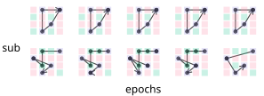

Produce the results for ‘Towards a normative theory of routines’
This notebook provides a computationally reproducible record of the analysis and figure generation for the paper ‘Towards a normative theory of routines’ (or whatever we wind up deciding to call it.
Settings and other things
This notebook assumes you have the following file structure:
The following object is masked from 'package:dplyr':
combine
Code
library(knitr)data_path ='data-wrangled/'sim_data_path ='sims/'fig_path ='figs/'function_loc <-"R"# where are the functions?req_functions <-list.files(function_loc)sapply(req_functions, function(x) source(paste(here::here(function_loc), x, sep="/")))
Q1. Can we produce routines in a consistent way across sessions and conditions?
Here, I calculate the routine (R) scores for each participant, generate density plots of those scores over experiments and conditions, and then I print out the analysis of the basis differences between conditions, across replications.
Compute R Scores
First I compute R scores for each participant, using the formula -
{fig-align="cent"}
Code
apply_sort_data <-function(exp_str, data_path){# take the trial level data from session 2 and sort into contexts. We assume a person believes they are in the same context until their first 'cc' hit after a context switch. data_fname <-paste(data_path, 'exp_', exp_str,'_evt.csv', sep='') save_fname <-paste(data_path, 'exp_', exp_str,'_door_selections_for_ent.csv', sep='')ent_initial_data_sort(data_fname, save_fname)}lapply(c('lt', 'ts'), apply_sort_data, data_path=data_path)apply_compute_R <-function(exp_str){# take the data output from the step above, and compute the routine score for each participant and context data_fname <-paste(data_path, 'exp_', exp_str,'_door_selections_for_ent.csv', sep='') save_new_data_fname <-paste(data_path, 'exp_', exp_str,'_rscore-full.csv', sep='') # for saving R scores not averaged across context. Note that original plotting code in the function below, now commented out, shows that save_sum_data_fname <-paste(data_path, 'exp_', exp_str,'_rscore.csv', sep='')ent_compute_routine_measure(data_fname, save_new_data_fname, save_sum_data_fname)}lapply(c('lt', 'ts'), apply_compute_R)
Plot R densities across experiments and conditions
Now that we have the R scores, we can make a pretty plot that shows the scores, by training condition, for each of the experiments.
I will make 2 subplots: one showing the densities over the two experiments (by condition), and one showing the trajectories for 2 participants. These will then be put together into one big figure, for the manuscript
Trajectories
Note that the below ‘function’ contains hard coded, handpicked subsets of trials, to show the trajectories in performance.
Code
exp_str <-'lt'traj_data_fname <-paste(data_path, 'exp_', exp_str, '_evt.csv', sep="")traj_fig_fname <-paste(fig_path, 'trajectories', sep='')w <-12# width of plot, in cmtraj_plt <-plot_trajectories(traj_data_fname, traj_fig_fname, w)
Now we’ve created it, lets display it -

Figure 1: Fig 1: example trajectories across doors
R scores are systematically higher than you would expect by chance
The next thing we want to demonstrate is the R scores are statistically higher than you would expect by chance. To achieve this, we first generate a null distribution of door selections for each subject, and obtaining a z score for their observed R score and the mean and sd of the null. We will compare this to zero, and to the performance of a perfectly performing, random agent.
First, to make the nulls, we take their observed data, and resample it a thousand times, under the constraint that the same door can’t be sampled twice.
Note that the evaluation of the code block below is set to false, as it takes a while to get the null distributions
Code
set.seed(42) # for reproducibility is the meaning of lifeexp_strs =c('lt', 'ts')apply_generate_nulls <-function(exp_str){ door_selections_fname =paste(data_path, 'exp_', exp_str, '_door_selections_for_ent.csv', sep='') r_dat_fname =paste(data_path, 'exp_', exp_str, '_rscore-full.csv', sep='') null_rs_fname =paste(data_path, 'exp_', exp_str, '_rnulls.csv', sep='') # for savinggenerate_nulls(door_selections_fname, r_dat_fname, null_rs_fname)}lapply(exp_strs, apply_generate_nulls)
Now that we have the null Rs, we can compute a z-score for each participant, based on their observed R, and the null distribution. We will save the z-scores for plotting, and save the results of t-tests against zero and against -2 to a csv file. Note that when the below was originally run, visual inspection of the data showed some outliers, so I removed participants with a z-score > or < 3 standard deviations from the mean.
`summarise()` has grouped output by 'sub'. You can override using the `.groups`
argument.
`summarise()` has grouped output by 'sub'. You can override using the `.groups`
argument.
[[1]]
NULL
[[2]]
NULL
Lets look at those stats!
Code
z_stats <-lapply(c('lt', 'ts'), function(x) read.csv(paste(data_path, 'exp_', x, '_zs_cl_inf-test.csv', sep=''), header=T))fmt ='In line with the hypothesis that we could elicit routines with the task, routine z-scores were significantly lower than would be expected by chance in the first experiment, i.e. a z-score of -2 (t(%d) = %.2f, p< %.2f), and this replicated across experiments (t(%d) = %.2f, p< %.2f)'z_results <-sprintf(fmt, z_stats[[1]]$parameter.df[[2]], z_stats[[1]]$statistic.t[2], z_stats[[1]]$p.value, z_stats[[2]]$parameter.df[[2]], z_stats[[2]]$statistic.t[2], z_stats[[2]]$p.value)z_results
[1] "In line with the hypothesis that we could elicit routines with the task, routine z-scores were significantly lower than would be expected by chance in the first experiment, i.e. a z-score of -2 (t(97) = -5.91, p< 0.00), and this replicated across experiments (t(97) = -7.01, p< 0.00)"
[2] "In line with the hypothesis that we could elicit routines with the task, routine z-scores were significantly lower than would be expected by chance in the first experiment, i.e. a z-score of -2 (t(97) = -5.91, p< 0.00), and this replicated across experiments (t(97) = -7.01, p< 0.00)"
Now we want to visualise the z-scores, but we will also compare them to the performance of a perfectly performing but perfectly random agent, whose choices are similar constrained like the participant nulls (i.e. the same door cannot be picked twice in a row).
Note that the below code block does not run, owing to the comp time required to generate the nulls.
Now lets plot the histograms of humans vs random agent. Note this code produces a labelled pdf (humans v agent) for talks, and a pdf pared back for a manuscript.
Fig 2: Showing z-scores for humans and random agent
Next, we can compare the mean z-score of the humans to that of the random agent - i.e. what is the probability that the mean z-score of the humans comes from the null distribution of the random agent?
Code
exp_strs <-c('lt', 'ts')human_zs <-lapply(exp_strs, function(x) read.csv(paste(data_path,'exp_', x,'_zs_cl.csv', sep=''), header=T))# this will load a n length vector called 'zs' where n = the number of times a null was generated for the random agentload(paste(sim_data_path, 'random-agent_z-score-analysis.Rds', sep=''))human_v_agent_zs <-sapply(human_zs, function(x) (mean(x[,'mu_z']) -mean(zs))/sd(zs))names(human_v_agent_zs) <- exp_strshuman_v_agent_ps <-sapply(human_v_agent_zs, pnorm)names(human_v_agent_ps) <- exp_strssprintf('the probability that the human data comes from the null distribution is p= %.2f for the lt exp, and p= .2f% for the ts exp', human_v_agent_ps['lt'], human_v_agent_ps['ts'])
[1] "the probability that the human data comes from the null distribution is p= 0.00 for the lt exp, and p= .2f 0.000000or the ts exp"
Code
# NEXT STEP IS TO SAVE BOTH OF THESE THINGS TO A CSV